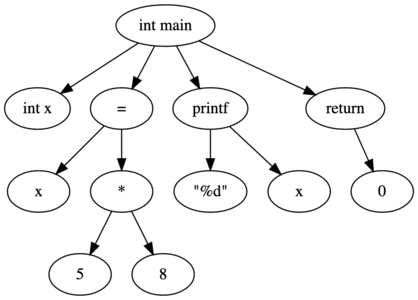

Chapter 15 Compiler Design
Our current parser is simplistic. It was great for what we were doing, but we need more flexibility in our image description files. Things that would be nice to have:
- A way to define ambient light.
- A way to define point light sources.
- A way to create a set of reflection constants such that we can reuse them when we add objects without having to type out 9 values each time.
- A way to define a coordinate system totally independent of the current stack and use that when placing some objects (to give more control over our images).
- A looping structure to help with animation.
The last 3 things on the list above are really the sorts of things you would see in a more robust programming language. The last one being loops and the other 2 being essentially variables. So we are going to move from a simple parser to a compiler-style design. In order to do so, we have to know more about how compilers work.
Section 15.1 The Compiler Pathway
Until now, you’ve probably thought about a compiler in the following way:
- Source code
- ???
- Executable code
Turns out, a lot happens in step 2, and we will investigate that. Compilers are made of the following parts:
- Lexer
- Parser
- Semantic Analyzer
- Optimizer
- Code Generator
As your code goes through these parts, it gets transformed into various structures that are less human-friendly but more computer-friendly, until we end up with the finished product, a binary executable program.
Section 15.2 Lexer
The lexer is the first process code goes through when being compiled. A lexer performs lexical analysis, which means that its job is to identify the tokens in a programming file. (A lexicon is the total collection of words in a language). The lexer will take in a computer program (most often a plain text file) and output a list of program tokens. Takes this example c code:
int main() {
int x;
x = 5 * 18;
printf("%d", x);
return 0;
}
After going through a lexer, the code would look something like this:
INT
IDENTIFIER main
(
)
{
int
IDENTIFIER x
;
x
ASSIGNMENT
VALUE 5
MULTIPLY
VALUE 18
...
As we can see, a lot of the things programmers use to make their code readable, like whitespace and comments, immediately get stripped out.
The only errors that a lexer will catch will be invalid tokens (like bad variable names, invalid symbols...). The lexer doesn’t know anything about the structure of the programming language. A natural language example would be something like this: Greedily cat computer overstates. That sentence contains valid English tokens, and would thus pass the lexer stage, despite the tokens making no sense in the order provided.
In order for a lexer to work, it must be programmed with all possible tokens in the programming language. For things like keywords and symbols, you can list them out. But for more interesting structures, like strings, identifiers and number values, you have to use regular expressions 1 .
Section 15.3 Parser
The parser performs syntactic analysis. This means that the parser checks the token list against the grammatical rules of the language. The parser will output a syntax tree and a corresponding symbol table. The syntax tree for the code above might look something like this:

Notice that the grouping symbols (i.e. () {} ;) have been stripped away and are now built into the syntax tree.The symbol table is going to be a list of symbols, mostly the identifiers, found in the syntax tree. Syntax tree nodes will link to the symbol table when appropriate.
The parser will only be able to find structural errors. Natural language example: mouse cat the hungry ate. would not pass the parser stage, while the tree computed blue integrals. would, despite the later not making any sense. In order for a parser to work, it must be programmed with the syntax of the language. This is commonly done using a context free grammar.
Section 15.4 Semantic Analyzer
The semantic analyzer takes the syntax tree and create a list of operations in the order that they need to be performed so that the program can work. Given the syntax tree above, the semantic analyzer might make an operations list like the following:
MULTIPLY 5, 8
ASSIGN x PREVIOUS
printf "%d", x
The
ASSIGN entry would have some reference to the previous entry. Things like x and printf would refer to the symbol table, since they are identifiers. The operations list is designed such that it can then be directly translated into processor operations, ready to be translated into binary code.Section 15.5 Optimizer & Code Generator
Once we have a list operations to be performed, the optimizer can look it over and potential provide size and time improvements. Some possible examples are removing unused variables from the symbol table, removing conditional statements that are always true/false.
Depending on the compiler and optimization level, the post-optimized operation list could result in code that is different enough from the source that debugging could be difficult. For example, here 2 is a list of possible optimizations for the c compiler, gcc.
The code generator is the part of the compiler that generates the executable code (I know, shocking). At this point, the operations list can be traversed and translated into executable binary code. Some compilers provide an option to create an assembly code file instead of an executable binary. You can do this in gcc with the
-S flag.